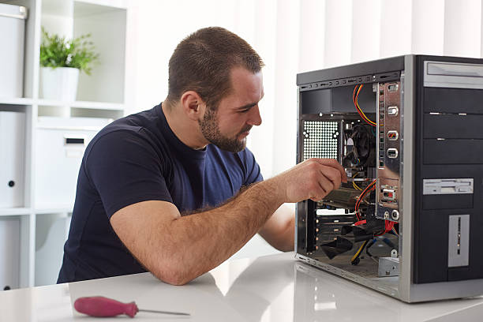

Ми пропонуємо
- Діагностика несправностей
- Налашутвання комп'ютера
- Заміна комлектуючих
- Складання комп'ютера
- Видалення шкідливого ПЗ
Швидкий термін виконання
У ТехноDoc ми гордимося нашою основною перевагою - швидкістю та ефективністю вирішення будь-яких технічних завдань. Розуміючи, що час є важливим ресурсом в сучасному світі, ми наполягаємо на максимально можливому зменшенні перерв у вашій роботі через проблеми з обладнанням або програмним забезпеченням. Наш підхід до вирішення технічних питань ґрунтується на високій кваліфікації наших фахівців та застосуванні передових технологій.
Даємо гарантію 6 місяців
У TechnoDoc ми повністю довіряємо у якість наших послуг та робіт, які ми надаємо, і гордо надаємо гарантію тривалістю 6 місяців на всі виконані ремонтні роботи та послуги. Ця гарантія - це наш зобов'язання перед вами, наших клієнтів, що ми стоїмо за якістю і надійністю наших послуг. Якщо у вас виникнуть будь-які проблеми або питання, пов'язані з нашими послугами, ми готові вирішувати їх безкоштовно протягом 6 місяців після виконання робіт.
Майстри з досвідом 10 років
У TechnoDoc, наша команда майстрів володіє імпресивним досвідом у сфері обслуговування техніки - не менше 10 років кожен. Ми пишаємося нашими професіоналами, які мають багаторічний досвід роботи з різноманітними технологіями та обладнанням. Наші фахівці володіють глибокими знаннями та навичками, що дозволяють нам забезпечувати найвищий рівень обслуговування техніки для наших клієнтів, незалежно від складності завдань чи типу обладнання.

Широкий спектр послуг
Наша компанія пропонує повний спектр послуг, включаючи ремонт та обслуговування пристроїв, відновлення даних, консультування з питань техніки та безпеки, налаштування мереж, і багато інших. Наші кваліфіковані фахівці готові надати ефективні рішення для різноманітного обладнання та операційних систем, забезпечуючи надійне функціонування вашого обладнання і прагнучи до високої якості обслуговування для задоволення потреб кожного клієнта. Ми прагнемо створювати довгострокові відносини на основі довіри та професіоналізму.